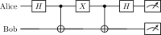

<!DOCTYPE html>
<html xmlns="http://www.w3.org/1999/xhtml">
<head>
  <meta charset="utf-8" />
  <meta name="generator" content="pandoc 3.10.2" />
  <meta name="viewport" content="width=device-width, initial-scale=1.0, user-scalable=yes" />
  <meta name="author" content="QuoNic" />
  <title>superdense_coding</title>
  <style>
    /* Default styles provided by pandoc.
    ** See https://pandoc.org/MANUAL.html#variables-for-html for config info.
    */
    html {
      color: #1a1a1a;
      background-color: #fdfdfd;
    }
    body {
      margin: 0 auto;
      max-width: 36em;
      padding-left: 50px;
      padding-right: 50px;
      padding-top: 50px;
      padding-bottom: 50px;
      hyphens: auto;
      overflow-wrap: break-word;
      text-rendering: optimizeLegibility;
      font-kerning: normal;
    }
    @media (max-width: 600px) {
      body {
        font-size: 0.9em;
        padding: 12px;
      }
      h1 {
        font-size: 1.8em;
      }
    }
    @media print {
      html {
        background-color: white;
      }
      body {
        background-color: transparent;
        color: black;
      }
      p, h2, h3 {
        orphans: 3;
        widows: 3;
      }
      h2, h3, h4 {
        page-break-after: avoid;
      }
    }
    p {
      margin: 1em 0;
    }
    a {
      color: #1a1a1a;
    }
    a:visited {
      color: #1a1a1a;
    }
    img {
      max-width: 100%;
    }
    svg {
      height: auto;
      max-width: 100%;
    }
    h1, h2, h3, h4, h5, h6 {
      margin-top: 1.4em;
    }
    h5, h6 {
      font-size: 1em;
      font-style: italic;
    }
    h6 {
      font-weight: normal;
    }
    ol, ul {
      padding-left: 1.7em;
      margin-top: 1em;
    }
    li > ol, li > ul {
      margin-top: 0;
    }
    blockquote {
      margin: 1em 0 1em 1.7em;
      padding-left: 1em;
      border-left: 2px solid #e6e6e6;
      color: #606060;
    }
    code {
      white-space: pre-wrap;
      font-family: Menlo, Monaco, Consolas, 'Lucida Console', monospace;
      font-size: 85%;
      margin: 0;
      hyphens: manual;
    }
    pre {
      margin: 1em 0;
      overflow: auto;
    }
    pre code {
      padding: 0;
      overflow: visible;
      overflow-wrap: normal;
    }
    .sourceCode {
     background-color: transparent;
     overflow: visible;
    }
    hr {
      border: none;
      border-top: 1px solid #1a1a1a;
      height: 1px;
      margin: 1em 0;
    }
    table {
      margin: 1em 0;
      border-collapse: collapse;
      width: 100%;
      overflow-x: auto;
      display: block;
      font-variant-numeric: lining-nums tabular-nums;
    }
    table caption {
      margin-bottom: 0.75em;
    }
    tbody {
      margin-top: 0.5em;
      border-top: 1px solid #1a1a1a;
      border-bottom: 1px solid #1a1a1a;
    }
    th {
      border-top: 1px solid #1a1a1a;
      padding: 0.25em 0.5em 0.25em 0.5em;
    }
    td {
      padding: 0.125em 0.5em 0.25em 0.5em;
    }
    header {
      margin-bottom: 4em;
      text-align: center;
    }
    #TOC li {
      list-style: none;
    }
    #TOC ul {
      padding-left: 1.3em;
    }
    #TOC > ul {
      padding-left: 0;
    }
    #TOC a:not(:hover) {
      text-decoration: none;
    }
    span.smallcaps{font-variant: small-caps;}
    div.columns{display: flex; gap: 1.5em;}
    div.column{flex: auto;}
    @media screen {
    div.columns{gap: min(4vw, 1.5em);}
    div.column{overflow-x: auto;}
    }
    div.hanging-indent{margin-left: 1.5em; text-indent: -1.5em;}
    /* The extra [class] is a hack that increases specificity enough to
       override a similar rule in reveal.js */
    ul.task-list[class]{list-style: none;}
    ul.task-list li input[type="checkbox"] {
      font-size: inherit;
      width: 0.8em;
      margin: 0 0.8em 0.2em -1.6em;
      vertical-align: middle;
    }
  </style>
  <script defer="" src="" type="text/javascript"></script>
</head>
<body>
<header id="title-block-header">
<h1 class="title">superdense_coding</h1>
<p class="author">QuoNic</p>
</header>
<div class="center">
<p><strong>Communication / 通信</strong> | 难度：中级 | 预计时间：10
分钟</p>
</div>
<h1 id="为什么需要">为什么需要？</h1>
<p>超密编码使用 1 个量子比特传输 2
个经典比特，是量子通信的重要协议。</p>
<h2 id="经典局限">经典局限</h2>
<p>̱</p>
<ul>
<li><p>经典通信：1 个量子比特只能传输 1 个经典比特</p></li>
<li><p>经典通信需要 2 个信道传输 2 比特信息</p></li>
</ul>
<h2 id="量子优势">量子优势</h2>
<p>̱</p>
<ul>
<li><p>超密编码：1 个量子比特传输 2 个经典比特</p></li>
<li><p>利用纠缠实现信息压缩</p></li>
<li><p>是量子通信的基础协议</p></li>
</ul>
<h2 id="实际应用">实际应用</h2>
<p>̱</p>
<ul>
<li><p>量子通信（高效信息传输）</p></li>
<li><p>量子网络（量子互联网）</p></li>
<li><p>量子密码学（量子密钥分发）</p></li>
</ul>
<h1 id="快速上手">快速上手</h1>
<pre style="python"><code>from quonic.algorithms import superdense_coding

# Send 2 classical bits using 1 qubit
result = superdense_coding(&quot;10&quot;)
print(f&quot;Sent: {result.sent}&quot;)
print(f&quot;Received: {result.received}&quot;)</code></pre>
<p><strong>预期输出</strong>：</p>
<pre><code>Sent: 10
Received: 10</code></pre>
<h1 id="原理详解">原理详解</h1>
<h2 id="电路图">电路图</h2>
<div class="center">
<p></p>
</div>
<h2 id="数学推导">数学推导</h2>
<p>超密编码协议：</p>
<ol>
<li><p>Alice 和 Bob 共享 Bell 对 <span
class="math inline">\(|\Phi^+\rangle = (|00\rangle +
|11\rangle)/\sqrt{2}\)</span></p></li>
<li><p>Alice 根据要发送的 2 比特信息编码： ̱</p>
<ul>
<li><p>00: 不操作</p></li>
<li><p>01: 施加 <span class="math inline">\(X\)</span> 门</p></li>
<li><p>10: 施加 <span class="math inline">\(Z\)</span> 门</p></li>
<li><p>11: 施加 <span class="math inline">\(ZX\)</span> 门</p></li>
</ul></li>
<li><p>Alice 发送她的量子比特给 Bob</p></li>
<li><p>Bob 解码得到 2 比特信息</p></li>
</ol>
<h2 id="几何解释">几何解释</h2>
<p>超密编码利用纠缠作为量子信道。Alice 的操作改变了 Bell
对的纠缠结构，Bob 通过解码恢复信息。</p>
<h1 id="代码详解">代码详解</h1>
<pre style="python"><code>from quonic.algorithms import superdense_coding

# superdense_coding(message)
# message: 2-bit string to send
result = superdense_coding(&quot;10&quot;)

# result.sent: original message
# result.received: decoded message
print(f&quot;Sent: {result.sent}&quot;)
print(f&quot;Received: {result.received}&quot;)</code></pre>
<h1 id="进阶用法">进阶用法</h1>
<h2 id="场景-1不同消息">场景 1：不同消息</h2>
<pre style="python"><code># Send different messages
for msg in [&quot;00&quot;, &quot;01&quot;, &quot;10&quot;, &quot;11&quot;]:
    result = superdense_coding(msg)
    print(f&quot;Sent: {msg}, Received: {result.received}&quot;)</code></pre>
<h2 id="场景-2带噪声的超密编码">场景 2：带噪声的超密编码</h2>
<pre style="python"><code># Superdense coding with noise
result = superdense_coding(&quot;10&quot;, noise=0.05)
print(f&quot;Error rate: {result.error_rate}&quot;)</code></pre>
<h1 id="适用场景">适用场景</h1>
<h2 id="量子通信">量子通信</h2>
<p>超密编码可以提高量子通信的效率。</p>
<h2 id="量子网络">量子网络</h2>
<p>超密编码是量子网络的基础协议之一。</p>
<h2 id="量子密码学">量子密码学</h2>
<p>超密编码可以用于量子密钥分发。</p>
<h1 id="常见问题">常见问题</h1>
<h2 id="超密编码为什么能传输-2-比特">超密编码为什么能传输 2 比特？</h2>
<p>超密编码利用纠缠作为量子信道。Alice 的操作改变了 Bell
对的纠缠结构，Bob 通过解码恢复 2 比特信息。</p>
<h2
id="超密编码和隐形传态有什么区别">超密编码和隐形传态有什么区别？</h2>
<p>超密编码：1 个量子比特传输 2 个经典比特。隐形传态：2 个经典比特传输 1
个量子比特。</p>
<h2 id="超密编码需要多少量子比特">超密编码需要多少量子比特？</h2>
<p>超密编码需要 2 个量子比特：1 个 Alice 的，1 个 Bob 的（共享 Bell
对）。</p>
<h1 id="学习路径">学习路径</h1>
<h2 id="前置知识">前置知识</h2>
<p>̱</p>
<ul>
<li><p>Bell 态（2 量子比特纠缠）</p></li>
<li><p>CNOT 门和 Hadamard 门</p></li>
<li><p>量子测量</p></li>
</ul>
<h2 id="继续学习">继续学习</h2>
<p>̱</p>
<ul>
<li><p>量子隐形传态</p></li>
<li><p>量子密钥分发</p></li>
<li><p>量子网络</p></li>
</ul>
<h1 id="完整示例代码">完整示例代码</h1>
<h2 id="示例-1基本超密编码">示例 1：基本超密编码</h2>
<pre style="python"><code>from quonic.algorithms import superdense_coding

result = superdense_coding(&quot;10&quot;)
print(f&quot;Sent: {result.sent}&quot;)
print(f&quot;Received: {result.received}&quot;)</code></pre>
<p> </p>
<h1 id="下载">下载</h1>
<p></p>
<ul>
<li><p>(https://github.com/ChrisLee0721/QuoNic/blob/main/examples/superdense_coding/superdense_coding.py)</p></li>
</ul>
</body>
</html>
